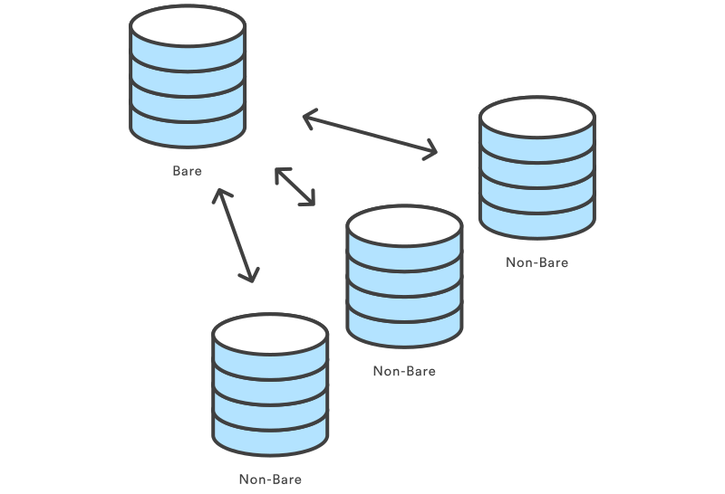

Depo (Repository) Oluşturalım

Bu ders en önemli Git komutlarından bazıları hakkında bilgiler içermektedir. İlk önce versiyon kontrollü bir projeye başlamak için yapılması gereken ilk iş olan repository oluşturma kısmından bahsedilecek. Daha sonraki kısımlarda ise günlük olarak kullanılan git komutları anlatılacak.
Bu dersin sonunda yeni bir git destekli bir proje oluşturabilecek, mevcut projenin anlık kopyasını alabilecek ve proje üzerinde ne gibi değişiklikler yapıldığını görebileceksiniz.
git init
git init komutu ile yeni bir Git deposu oluşturulur. Henüz git versiyonlama aktif edilmemiş bir proje için ya da henüz başlangıç yapılmamış yeni bir proje için bu komut ile versiyonlamayı aktif hale getirebilirsiniz. Bu komut haricindeki diğer Git komutları genel olarak bu komuttan sonra kullanılabilir olacaktır. Bu nedenle yeni bir projede ilk çalıştırılacak komut da budur.
git init komutu çalıştırılan dizinde .git isminde yeni bir dizin oluşturur. Bu dizin içinde git deposu için gerekli tüm bilgiler bulunmaktadır. Bu bilgilere genel olarak metadata denmektedir. SVN gibi projedeki her klasörün içine revizyon bilgileri tutmak için klasör ya da dosya oluşturmaz. Projenin kök dizinine sadece bir adet dizin oluşturur. Bu şekilde projenin içi genel olara kirlenmemiş olur. (Daha önce SVN kullananlar ve ilk kez Git öğrenenler için bu, önemli bir ayrıntıdır.)
Kullanımı
git init
Çalıştırıldığı dizini Git deposuna çevirecektir. Bu komut çalıştırılan dizine .git adında bir klasör oluşturacaktır. Bu komut ile birlikte proje üzerinde yapılacak değişiklikler kaydedilmeye hazır demektir.
git init <dizin>
Bu komut dizin adında bir klasör oluşturur ve klasörün içini de git deposuna çevirir.
git init --bare <dizin>
Üzerinde geliştirme yapılmamak üzere ve merkez depolar oluşturmak için kullanılır. Geliştiriciler arasında paylaşılan merkezi depolar --bare ile işaretlenerek oluşturulmalıdır. Bu şekilde yalın depolar oluşturulurken genel olarak kullanılan dizinin sonuna .git eklenir. Örneğin yalın bir deponun klasör ismi şu şekilde olabilir: proje-dizini.git
Tartışma
SVN ile karşılaştırıldığında git init komutu ile versiyon kontrollü projeler oluşturmak son derece kolaydır. Git, bir depo oluşturmanıza, dosyaları içeri aktarmanıza ya da mevcut bir depoyu kopyalamanıza gerek duymaz. Tek yapmanız gereken cd komutuyla dizinin içine girmeniz ve git init komutunu çalıştırmanız. Böylece Git deponuz hazır hale gelecektir.
Çoğu projede git init komutu merkezi bir depo oluşturulurken kullanılır ve geliştiriciler kendi bilgisayarlarında git clone komutunu kullanırlar. Böylece merkezi depoda yer alan projeyi kendi bilgisayarlarına almış olur ve Git deposu kullanıma hazır olacaktır.
Bare (yalın, çıplak) Depoları
--bare işareti ile Git deposu oluşturulur ancak çalışma dizini yer almaz. Bu gibi depolarda dosyaları düzenlemek ya da değişiklikleri commit etmek mümkün değildir. Merkez Git depoları yalın depo olarak oluşturulmalıdır. Çünkü yalın olmayan bir depoya dalları göndermek değişiklikerin üzerine yazılmasını sağlayabilir. Şu şekilde de düşünebiliriz. Eğer bir depo --bare işareti ile oluşturulduysa bu depo kodların sadece saklandığı ve üzerinde geliştirme yapılmadığı bir depo olarak düşünülebilir. Böylece merkezi depoya yalın depo, diğer geliştiricilerin depolarına da yalın olmayan depolar denilebilir.

Örnek
Bir projenin yerel bir kopyasını oluşturmak için genel olarak git clone kullanılmakta. git init komutu ise merkezi proje depoları oluşturmak için kullanılır. Örnek kodlar şu şekilde olabilir;
ssh <kullanici>@<host>
cd /proje/deposunun/yolu
git init --bare proje-dizini.git
Öncelikle merkezi deponun yer alacağı sunucuya ssh ile giriş yapınız. Daha sonra projenin hangi dizinde olmasını istiyorsanız o dizini açın. Son olarak ise --bare kullanarak merkezi depoyu oluşturun. Daha sonra geliştiriciler projenin bir kopyasını kendi bilgisayarlarına git clone proje-dizini.git şeklinde alabilirler.
git clone
Bu komut mevcut bir git deposunu kopyalamak için kullanılmaktadır. Bu komut SVN'deki svn checkout ile hemen hemen aynı işlevi görür. Farklı olarak ise kopyalanan deponun tam teşekküllü bir Git deposu olmasıdır. Yani kendi geçmiş kayıtlarına sahip ve kendi dosyaları ile klasörleri olan merkezi depodan tamamen izole edilmiş haldedir.
Kullanımı
git clone <depo>
Bu komut <depo> adresinde yer alan deponun bir kopyasını alır ve çalıştırıldığı dizine kaydeder. Kaynak depo kişinin kendi bilgisayarında olacağı gibi HTTP ya da SSH gibi protokoller ile erişilebilen bir makina üzerinde de olabilir.
git clone <depo> <dizin>
Bu komut ile de kaynak depo bulunduğumuz dizinde, komutta belirtilen <dizin> adında bir dizin oluşturulacak ve kaynak depo içeriği bu oluşturulan klasör içine kopyalanacaktır.
Tartışma
Bir proje merkezi git deposu olarak oluşturulduysa git clone komutu geliştirme ve değişiklik yapmak için projenin bir kopyasını almak için kullanılır. git init komutunda olduğu gibi klonlama işlemi bir kez yapılır. Kopyalama tamamlandıktan sonra tüm versiyon kontrol işlemleri ve proje üzerinde değişiklikler yapılmaya hazır demektir.
Depo'dan Depo'ya Birlikte Çalışma (Collaboration)
Git'in çalışan kopya mantığı SVN ile karşılaştırıldığında çok farklıdır. Git ile çalışırken her depo kendi başına tam teşekküllü bir depo olarak ele alınmalıdır.
Bu farklı bakış açısı Git projesinde birlikte çalışma mantığı ile SVN projesindeki birlikte çalışma mantığının birbirinden farklı olmasını sağlar. SVN'de bilgisayarımızdaki proje kopyası merkezi depoya bağımlu iken Git ile bu ilişki Depo'dan Depo'ya şeklindedir. SVN'in merkezi deposuna çalışan kopyayı göndermek yerine Git, depodan depoya push ve pull komutlarını kullanarak veri aktarımı sağlar.


Esasen her bir Git deposuna özel anlam da yüklenebilir. Örneğin depolardan birisini merkezi depo olarak görmek ve diğerlerini çalışan kopya görmek gibi. Böyle bir yaklaşım Merkezi İş Akışı şeklinde özetlenebilir. Bu yaklaşım ile versiyon kontrol sistemlerine baktığımızda bakış açımızın daha başarılı olduğunu söyleyebiliriz.
Örnek
Aşağıdaki örnek deneme.com üzerinde ssh ile erişilebilen merkezi bir depodan lokal kopya oluşturmak için verilebilir;
git clone ssh://ahmet@deneme.com/proje/deposunun/yolu/proje-dizini.git
cd proje-dizini
# Proje üzerinde çalışmaya başla
İlk satırdaki komut bulunduğumuz dizinde yeni bir proje-dizini oluşturur ve merkez deponun içeriğini oluşturulan bu dizine kopyalar. Daha sonra proje klasörünün içine girebilir dosyalar üzerinde değişikliklere başlayabilir, yapılan değişiklikleri merkezi depoya ya da diğer depolara gönderebilirsiniz. Ayrıca .git uzantısı klonlanmış depo için göz ardı edilecektir. Böylece klonlanmış yeni lokal depomuz yalın olmayan (non-bare) bir depo olacaktır.
git config
Bu komut ile bilgisayarınızdaki Git programını ya da her bir projeyi kendi içinde konfigüre edebilirsiniz. Bu komut ile kullanıcıya ait bilgilerden tutunda bir deponun nasıl davranacağına kadar herşeyi konfigüre etmenizi sağlar. Genel olarak kullanılan konfigürasyon seçenekleri aşağıda listelenmiştir.
Kullanımı
git config user.name <kullaniciadi>
Bu komut ile aktif depo üzerinde geliştirme yapan geliştiricinin adı tanımlanmış olur. Genel olarak --global işareti ile birlikte kullanılmaktadır.
git config --global user.name <kullaniciadi>
Bu şekilde kullanıldığında sistemi kullanan kullanıcının yapacağı tüm commitlerde kullanılacak isim bilgisi kaydedilmiş olacaktır.
git config --global user.email <mailadresi>
Kullanıcının yapacağı commitlerde kullanılmak üzere kullanıcıya ait mail adresini genel olarak ayarlak için kullanılır.
git config --global alias.<takma-isim> <git-komutu>
Bir Git komutu için takma isim oluşturur. Böylece aynı işi yapan bir komut farklı bir isim ile kullanılabilir.
git config --system core.editor <metin-etitörü>
Git komutları için kullanılacak varsayılan metin editörünü ayarlamak için kullanılır. Ör: geany
git config --global --edit
Bu komut ile varsayılan metin editörü kullanılarak global konfigürasyon dosyası düzenlenmek üzere açılır.
Tartışma
Tüm konfigürasyon seçenekleri düz metin dosyalarında saklanır. Bu ayarları değiştirmek için git config komutu, komut satırında kullanılmaya uygundur. Genel olarak ilk Git kurulumunda --global olarak bir çok ayar yapılmakta ve proje geliştirme aşamasına geçilmektedir.
Git konfigürasyon seçeneklerini 3 farklı dosya da saklar. Bunlar, depo, kullanıcı ve sistem şeklindedir.
<depo>/.git/config- Depo bazlı ayarlar.~/.gitconfigKullanıcı bazlı ayarlar.--globalişareti ile ayarlanan konfigürasyon seçenekleri bu dosya da saklanır.$(prefix)/etc/gitconfig- Sistem genelinde kullanılan ayarlar.
Bu dosyalardaki aynı ayar yer alırsa öncelik depo, sonra kullanıcı ve sonra da sistem'dir. Bu dosyalardan herhangi birini açtığınızda aşağıdakine benzer bir içerik görünecektir.
[user]
name = Ahmet Hamdi
email = ahmet@deneme.com
[alias]
st = status
co = checkout
br = branch
up = rebase
ci = commit
[core]
editor = geany
excludesfile = /home/ahmethamdi/.gitignore_global
Bu bilgileri değiştirdiğinizde de git config ile aynı etki görülecektir.
Örnek
Git'i kurduktan sonra ilk iş olarak adınızı ve mail adresinizi ayarlamak ve bazı varsayılan ayarları değiştirmek olacaktır. Yapılan ayarlar genel olarak aşağıdakiler benzer şeyler olacaktır.
# Git bizi nasıl tanısın istersiniz
git config --global user.name "Ahmet Hamdi"
git config --global user.email ahmet@deneme.com
# Favori metin editörünü ayarlayalım
git config --global core.editor geany
# SVN benzeri bazı komut alsyasları oluşturalım
git config --global alias.st status
git config --global alias.co checkout
git config --global alias.br branch
git config --global alias.up rebase
git config --global alias.ci commit
Bu komutlar ile yapılan değişiklikler ~/.gitconfig dosyasına yansıyacaktır.